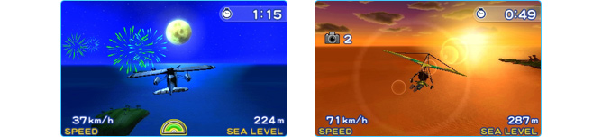
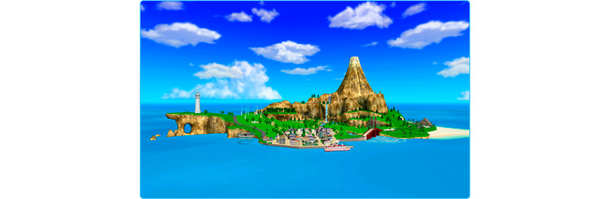
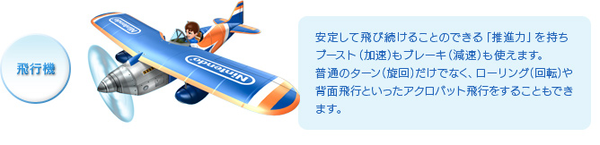
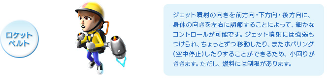
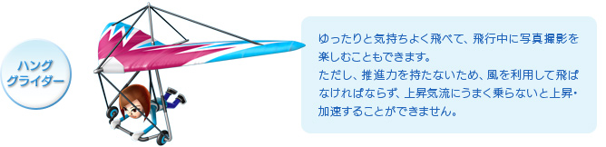
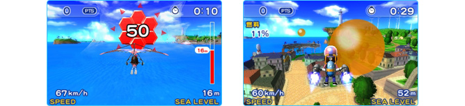
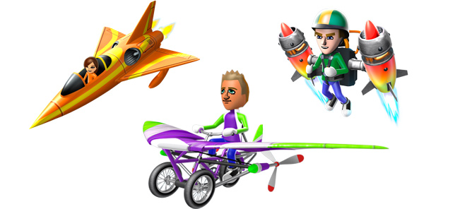
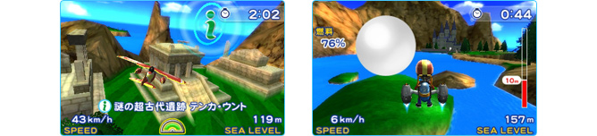
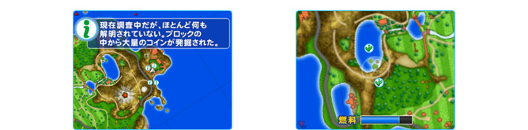
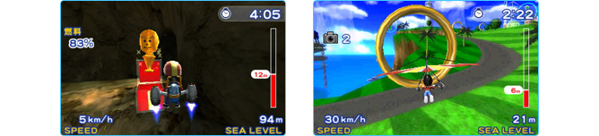

『パイロットウイングス リゾート』は、「空を飛んでみたい」という、誰もが一度は胸に抱く夢をかなえてくれる、ニンテンドー3DS用のスカイスポーツゲームソフトです。
このゲームでは、『Miiスタジオ』で作成した自分や友だちのMiiをパイロットとして選び、「飛行機」「ロケットベルト」「ハンググライダー」の3種類の乗り物を使って自由に大空を飛び回ることができます。

舞台となっているのは、Wiiソフト『Wii Sports Resort』にも登場した「ウーフーアイランド」です。島には大きな火山や湖があったり、橋や灯台など、さまざまな建物も建っています。島の周りをゆったりと巡ったり、地形や建物の陰に隠れた場所をのぞいてみたり、ぼんやりと飛んでいるだけでも、いろいろな発見があります。

ニンテンドー3DSならではの裸眼立体視に対応しているので、目の前に広がる大空も、木々や街並みも、よりリアルで臨場感たっぷり。実際にはなかなか実現できない「空を飛ぶ感覚」を、気軽に味わうことができるのです。
『パイロットウイングス リゾート』をスタートすると、まず「体験フライト」がはじまります。ここでは3種類の乗り物の操作方法を、実際にプレイしながら確認することができます。なお、飛行機、ロケットベルト、ハンググライダーでは、それぞれ飛び方や操作感が大きく異なります。



これら3種類の機体の操作を体で覚えるのが、このゲームの最大のポイントです。最初のうちは不時着してしまったり、障害物にぶつかったりしますが、プレイしていると徐々に慣れてきて、気持ちよく操作できるようになります。
『パイロットウイングス リゾート』には、「ミッションフライト」と「フリーフライト」の2つのモードがあります。
メインとなる「ミッションフライト」では、指定された場所まで飛んで着陸したり、島の中に浮かんでいるリングをくぐったりと、さまざまな課題に挑戦します。ミッションは「トレーニング」クラスからはじまって、一定以上の成績でクリアすると次の「ブロンズ」クラスというふうに、より難しいミッションにチャレンジできるようになります。

実際にプレイしてみると、「トレーニング」クラスは比較的簡単なミッションが多く、すぐクリアできてしまいました。しかし「ブロンズ」クラスからは、そうはいきません。コースを覚えて、あらかじめターンの準備をしないと曲がりきれなかったり、ロケットベルトの燃料が切れてしまったりと、だんだん手ごわくなってきます。
ミッションはかなりたくさんの数が用意されているので、全部のミッションを完璧にこなそうと思えば、相当やりこむことができそうです。難しいミッションは、それだけクリアできたときの達成感も大きく、やりがいがあります。
またミッションフライトを進めると、さらに3種類の「スペシャルマシン」を使えるようになります。スペシャルマシンとして登場する「ジェット機」「スーパーロケットベルト」「ペダルグライダー」は、それぞれ「飛行機」「ロケットベルト」「ハンググライダー」がパワーアップしたものです。がんばってミッションフライトをプレイして進めて、ぜひ「スペシャルマシン」を体験してみてください。

もう一方の「フリーフライト」は、制限時間内であれば、好きな乗り物で自由に飛ぶことができるというモードです。島内のあちこちには、観光スポットの紹介文を読める「iリング」が置いてあります。また、ミッションフライトの「ブロンズ」クラスをクリアすると、数多くの「白風船」が出現します。これらを一定数集めるごとに1回の「フリーフライト」で飛べる制限時間が長くなっていきます。少しずつ集めてみるとよいでしょう。


このほかにも、ミッションフライトをプレイして進めていくことによって、このフリーフライトで特定の乗り物で飛んでいるときだけ出現するアイテムも登場します。これらのアイテムは、建物の陰や洞窟など、見つけにくい場所に浮かんでいることもあるので、注意深くさがしてみましょう。一定数以上集めると、嬉しいオマケがオープンします。

もちろん「フリーフライト」ですから、アイテム集めを気にせず、ただひたすら自由に空を飛んでも構いません。ちょっとした合間に気持ちよく空を飛んでストレス解消ができるというのも、『パイロットウイングス リゾート』ならではの楽しみ方なのです。